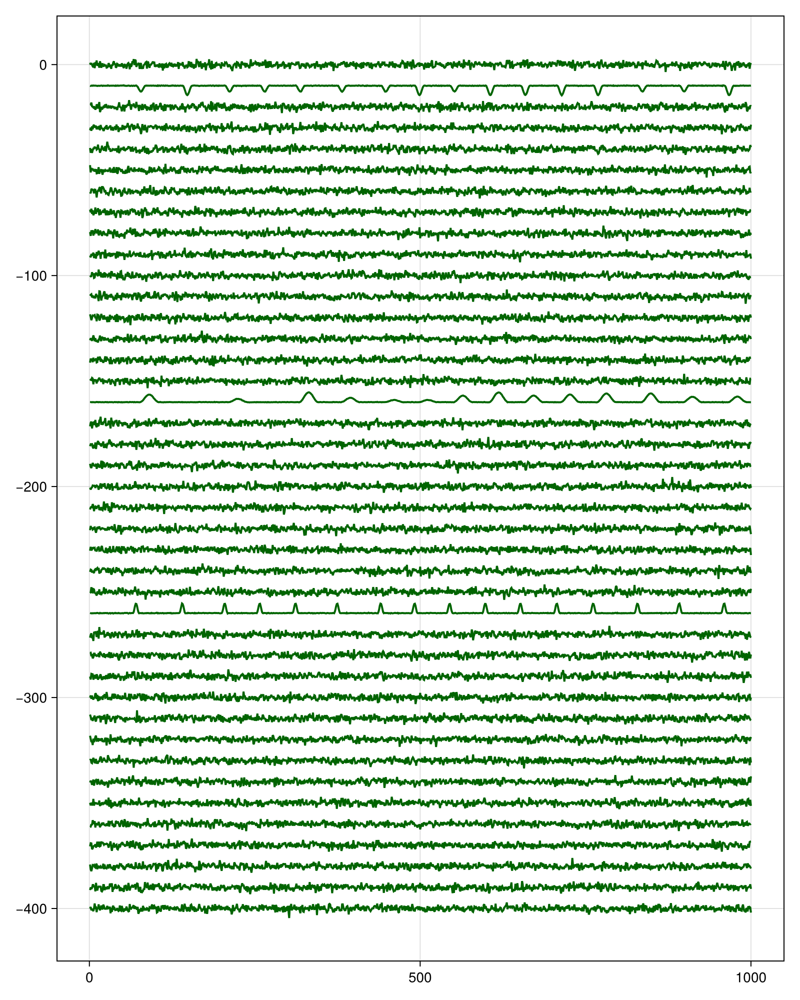
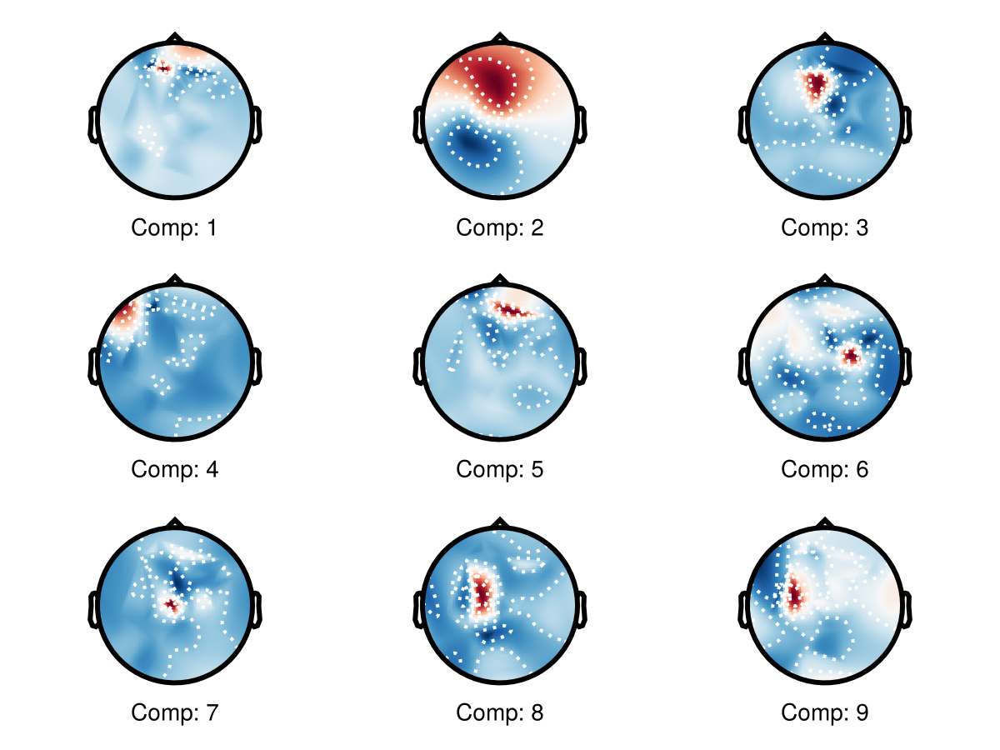

EEG Tutorial
This tutorial shows an EEG-style workflow with Amica.jl
Setup and Channel Selection
using Amica
using UnfoldSim
using CairoMakie
using UnfoldMakie
hart = Hartmut() # headmodel used in UnfoldSim simulation
ch_ix = findall(
l -> l in lowercase.(UnfoldMakie.TopoPlots.CHANNELS_10_05),
lowercase.(hart.electrodes["label"]),
)[1:4:end] # don't use all channels to speed up calculationPlease cite: HArtMuT: Harmening Nils, Klug Marius, Gramann Klaus and Miklody Daniel - 10.1088/1741-2552/aca8ceSimulate EEG and Fit AMICA
Note that in difference to e.g. eeglab, or Unfold.jl, we need samples x channels in Amica.jl. Transpose if necessary!
eeg, evts = UnfoldSim.predef_eeg(; multichannel=true)
eeg = eeg[ch_ix, 1:10_000]' # sample x channel
model_sim = fit(
SingleModelAmica,
Float32.(eeg);
maxiter=500,
show_progress=false,
sort_by_variance=true,
)Please cite: HArtMuT: Harmening Nils, Klug Marius, Gramann Klaus and Miklody Daniel - 10.1088/1741-2552/aca8ce
[ Info: Likelihood decreasing!
[ Info: Likelihood decreasing!
[ Info: Likelihood decreasing!
[ Info: Likelihood decreasing!
[ Info: Likelihood decreasing!
[ Info: Likelihood decreasing!
[ Info: Starting Newton ... setting numdecs to 0
┌ Warning: It is unclear right now whether this function works correctly, as the calculated variances are all very close to 1 - we might have missed a normalisation step somwhere. Your mileage might vary
└ @ Amica ~/work/Amica.jl/Amica.jl/src/main.jl:253Inspect Recovered Sources
ica_activations = recover_sources(eeg, model_sim)[1:1000, :]
series(
(ica_activations') .- range(0, 400, length=length(ch_ix)),
solid_color=:darkgreen,
figure=(; size=(800, 1000)),
)
One can clearly spot the three simulated EEG traces! Nice!
Plot Mixing Topographies
f = Figure()
A = mixing(model_sim)
for c = 1:3
for row = 1:3
c_num = (row - 1) * 3 + c
plot_topoplot!(
f[row, c],
A[c_num, :];
labels=hart.electrodes["label"][ch_ix],
layout=(; use_colorbar=false),
topo_attributes=(; enlarge=0.9, label_scatter=false),axis=(;xlabel="Comp: $c_num"))
end
end
f